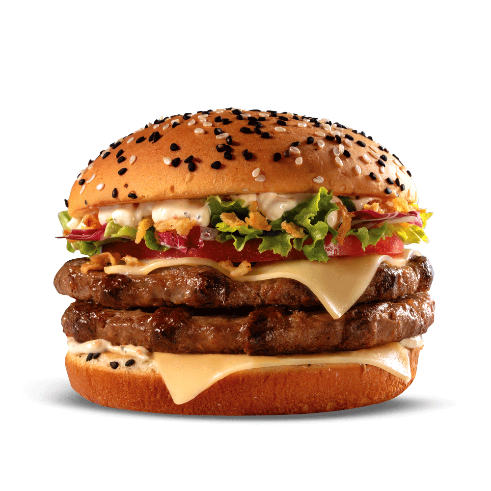

|
FOR EAT | FOR DRINK | CONTACT |
|---|
|  | The term burger can also be applied to the meat patty on its own, especially in the United Kingdom, where the term patty is rarely used, or the term can even refer simply to ground beef. Since the term hamburger usually implies beef, for clarity burger may be prefixed with the type of meat or meat substitute used, as in beef burger, turkey burger, bison burger, portobello burger, or veggie burger. |
The most famous French fries in the world. Delicious selected potatoes, fried, crispy on the outside, soft on the inside, golden, irresistible, tasty, famous, and all the other positive adjectives you want to give. |
 |